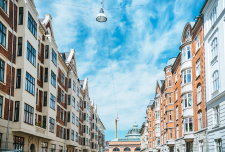
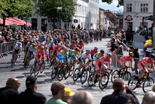
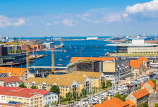
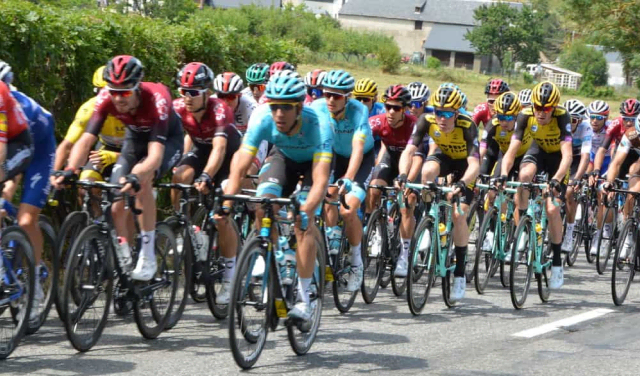
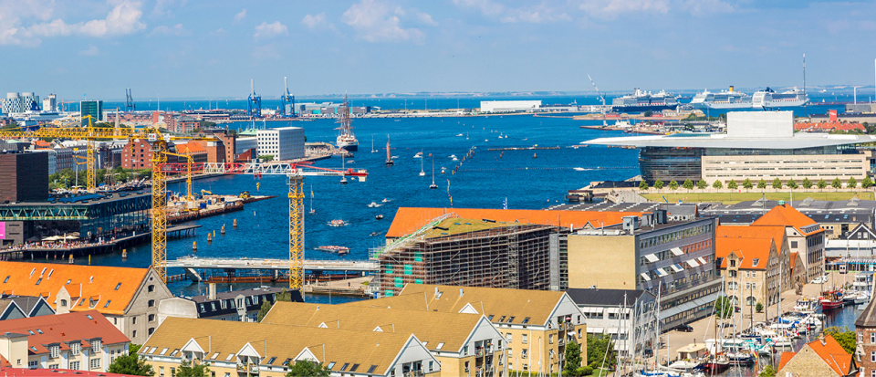

Distortion rykkes til august grundet Corona
Gymnasium ansætter FIFA-trænere (kbh)

Tour de France-ruten i København er klar

Regning på 1,6 milliarder til københavnerne

Tour de France-rute i
København 2022 er klar
Verdens største cykelløb, Tour de France, kommer til
verdens bedste cykelby i sommeren 2022. København
er den officielle start-by, og nu er ruten gennem byens
gader klar.
Mest læste
Distortion: Gadefestivallen er rykket til august grundet COVID-19
Københavns Private Gymnasium ansætter nye FIFA-trænere
Tour de France-ruten i København 2021 er klar
Zulu Awards: Alt hvad der skete
Nu åbner københavns museum

Fredag steg københavnernes regning
for udligning pludselig til 1,6 milliarder
Regningen for en ny udligningsreform bliver langt større for en række
hovedstadskommuner, viste nye beregninger fredag. Nu er kender flere af
hovedstadens borgmestre, at de er nødt til at hæve skatten.